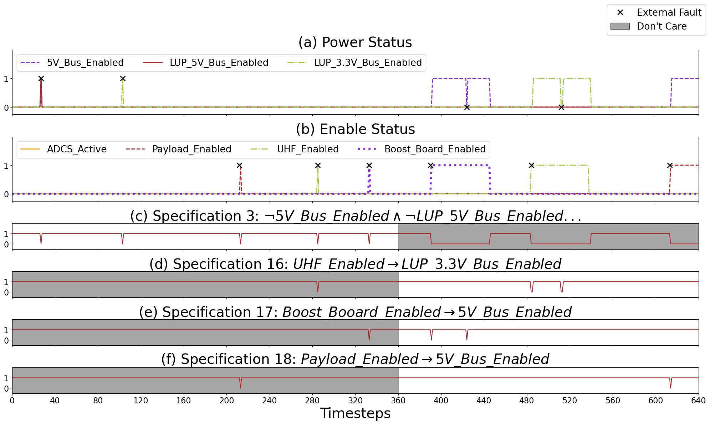
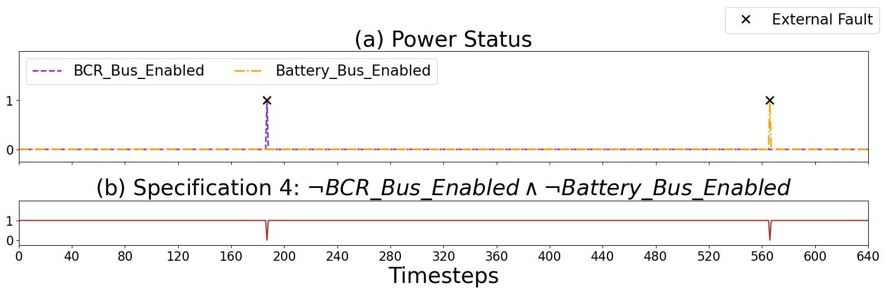
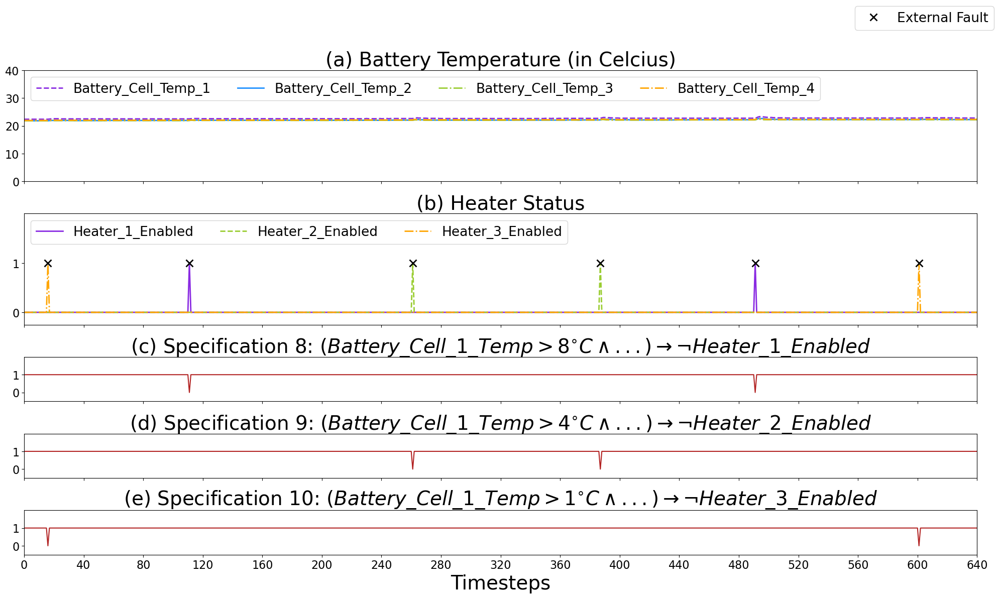

Runtime Verification Triggers Real-time, Autonomous Fault Recovery on the CySat-I
Alexis Aurandt, Phillip H. Jones, and Kristin Yvonne Rozier
This webpage contains further details and artifacts for reproducibility of the experiments in "Runtime Verification Triggers Real-time, Autonomous Fault Recovery on the CySat-I"
Code and data to regenerate all experiment and analysis plots in the paper can be found HERE.
The list containing the full specifications can be found HERE.
-------------------------------------
All eight specification faults are illustrated below.

Fig. 1. EPS Power Bus Fault Recovery. (a) The power status of the 5 volt, LUP 5 volt, and LUP 3.3 volt buses. (b) The enable status of the ADCS, payload, UHF, and boost board. An 'X' marker indicates an injection of an external fault. (c) (d) (e) (f) Output from R2U2 correctly determining the current state of specification 3, 16, 17, and 18 respectively. A shaded region indicates a time range where the OBC does not care about the output of R2U2 within its fault recovery.

Fig. 2. EPS Power Bus Fault Recovery. (a) The power status of the battery charge regulator (BCR) bus and the battery bus. An 'X' marker indicates an injection of an external fault. (b) Output from R2U2 correctly determining the current state of specification 4.

Fig. 3. EPS Battery Heater Fault Recovery. (a) The battery temperature of the four battery cells. (b) The enable status of the three battery heaters. An 'X' marker indicates an injection of an external fault. (c) (d) (e) Output from R2U2 correctly determining the current state of specification 8, 9, and 10 respectively. A shaded region indicates a time range where the OBC does not care about the output of R2U2 within its fault recovery.